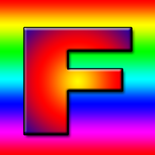

TODO: big performance issues with offscreen canvas, to investigate
TODO: height map to texture inversed, to investigate
Render to Texture, OnScreen
With keyboard/mouse interaction
TODO: texture inversed, to investigate
Under HTTP only
Render to Texture, Offscreen
With keyboard/mouse interaction
Under HTTP Only
base:

Tipova:
Tutorials